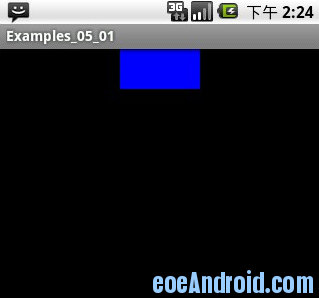
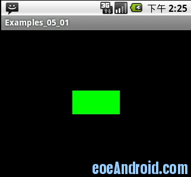

Android中的View
View类是Android的一个超类，这个类几乎包含了所有的屏幕类型。每一个View都有一个用于绘图的画布，这个画布可以进行任意扩展。在游戏开发中叶可以自定义视图(View),这个画布的功能更能满足我们在游戏开发中的需要。在Android中，任何一个View类都只需重写onDraw方法来实现界面显示，自定义的视图可以是复杂的3D实现，也可以是非常简单的文本形式等。
游戏中最重要的就是需要与玩家交互，比如键盘输入、触笔点击事件，我们如何来处理这些事件呢？Android中提供了onKeyUp、onKeyDown、onKeyMultiple、onKeyPreIme、onTouchEvent、onTrackballEvent等方法，可以轻松地处理游戏中的事件信息。所以，在继承View时，需要重载这几个方法，当有按键按下或弹起等事件时，按键代码自动会传输给这些相应的方法来处理。
游戏的核心是不断地绘图和刷新界面，图我们已经通过onDraw方法绘制了，下面来分析如何刷新界面。Android中提供了invalidate方法来实现界面刷新，注意，invalidate 不能直接在线程中调用，就是不可以在子线程中调用明白乎？因为它违背了 Android的单线程模型：Android UI操作并不是线程安全的，并且这些操作必须在UI线程中执行，因此Android中最常用的方法就是利用Handler来实现UI线程的更新。 其实用AsyncTask也可以。
下面是这样一个例子，我画了一个在屏幕上不停变换颜色的矩形，我们定义一些事件可以通过模拟器的上下键调节矩形的位置，比如把这个矩形向上移动或者把这个矩形向下移动。
下边们看一下运行效果。
效果图：



我们一共有2个类一个继承了View用来画图 另外Activity类用来刷新我们的视图 这2类分别是 Activity01和GameView。
GameView类
import android.content.Context;import android.graphics.Canvas;
import android.graphics.Color;
import android.graphics.Paint;
import android.view.View;
public class GameView extends View {
int miCount = 0;
int y = 0;
public GameView(Context context) {
super(context);
}
// 画图类
public void onDraw(Canvas canvas) {
if (miCount < 100) {
miCount++;
} else {
miCount = 0;
}
// 绘图
Paint mPaint = new Paint();
switch (miCount % 4) {
case 0:
mPaint.setColor(Color.BLUE);
break;
case 1:
mPaint.setColor(Color.GREEN);
break;
case 2:
mPaint.setColor(Color.RED);
break;
case 3:
mPaint.setColor(Color.YELLOW);
break;
default:
mPaint.setColor(Color.WHITE);
break;
}
// 绘制矩形
canvas.drawRect((320 - 80) / 2, y, (320 - 80) / 2 + 80, y + 40, mPaint);
}
}
Activity 这个类主要用来 刷新我们的视图
import android.app.Activity;import android.os.Bundle;
import android.os.Handler;
import android.os.Message;
import android.view.KeyEvent;
import android.view.MotionEvent;
public class Activity01 extends Activity {
private static final int REFRESH = 0x000001;
/* 声明GameView类对象 */
private GameView mGameView = null;
/** Called when the activity is first created. */
@Override
public void onCreate(Bundle savedInstanceState) {
super.onCreate(savedInstanceState);
/* 实例化GameView对象 */
this.mGameView = new GameView(this);
// 设置显示为我们自定义的View(GameView)
setContentView(mGameView);
// 开启线程
new Thread(new GameThread()).start();
}
Handler myHandler = new Handler() {
// 接收到消息后处理
public void handleMessage(Message msg) {
switch (msg.what) {
case Activity01.REFRESH:
// 注意这里的刷新界面实际上是在UI 线程中执行的 不是另外开启一个线程这里要搞清楚
mGameView.invalidate();
break;
}
super.handleMessage(msg);
}
};
class GameThread implements Runnable {
public void run() {
while (!Thread.currentThread().isInterrupted()) {
Message message = new Message();
message.what = Activity01.REFRESH;
// 发送消息
Activity01.this.myHandler.sendMessage(message);
try {
Thread.sleep(1000);
} catch (InterruptedException e) {
Thread.currentThread().interrupt();
}
}
}
}
/**
* 当然可以将GameThread类这样写 同样可以更新界面，并且不在需要 Handler在接受消息 class GameThread
* implements Runnable { public void run() { while
* (!Thread.currentThread().isInterrupted()) { try { Thread.sleep(100); }
* catch (InterruptedException e) { Thread.currentThread().interrupt(); }
* //使用postInvalidate可以直接在线程中更新界面 //我认为它这个方法也是给主线程发送消息 最后刷新界面的工作还是在主线程中执行的
* //如果我的看法错误 还请 大家疯狂留言。 mGameView.postInvalidate(); } } }
*/
// 详细事件处理见第三章
// 当然这些事件也可以写在GameView中
// 触笔事件
public boolean onTouchEvent(MotionEvent event) {
return true;
}
// 按键按下事件
public boolean onKeyDown(int keyCode, KeyEvent event) {
return true;
}
// 按键弹起事件
public boolean onKeyUp(int keyCode, KeyEvent event) {
switch (keyCode) {
// 上方向键
case KeyEvent.KEYCODE_DPAD_UP:
mGameView.y -= 3;
break;
// 下方向键
case KeyEvent.KEYCODE_DPAD_DOWN:
mGameView.y += 3;
break;
}
return false;
}
public boolean onKeyMultiple(int keyCode, int repeatCount, KeyEvent event) {
return true;
}
}